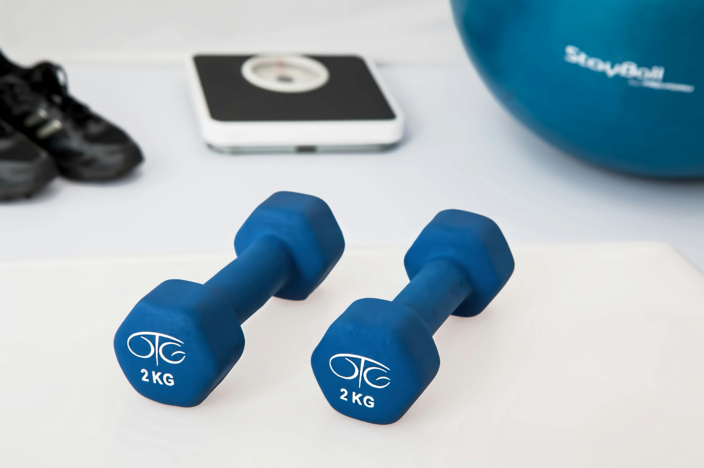

Ardahan İlk Paylaşım Özel Eğitim Merkezi bünyesinde akademik bilgilerimi saha tecrübemle birleştiriyorum. Önceliğim biyomekanik kaynaklı problemleri tespit edip kalıcı çözümler üretmektir.
Pediatrik Uzmanlık
Manuel Terapi
Cuevas Medek (CME)
Kinezyolojik Bantlama
Klinik Uygulamalar
Uzmanlık Alanları
Pediatrik Rehab.
Serebral Palsi, Spina Bifida ve gelişimsel gerilik durumlarında motor fonksiyon kazanımı.
CME Terapisi
Bobath Konsepti

Nörolojik Rehab.
İnme, MS ve Parkinson sonrası nöroplastisiteyi hedefleyen fonksiyonel tedaviler.
Denge & Koordinasyon
Yürüyüş Analizi
Ortopedik Rehab.
Bel-boyun fıtığı, skolyoz ve sporcu yaralanmalarında manuel terapi çözümleri.
Manuel Terapi
Klinik Egzersiz
İletişim
Klinik Adres
Doğu Cd No.13, Yeni Mahalle, İlk Paylaşım Özel Eğitim Merkezi - Ardahan